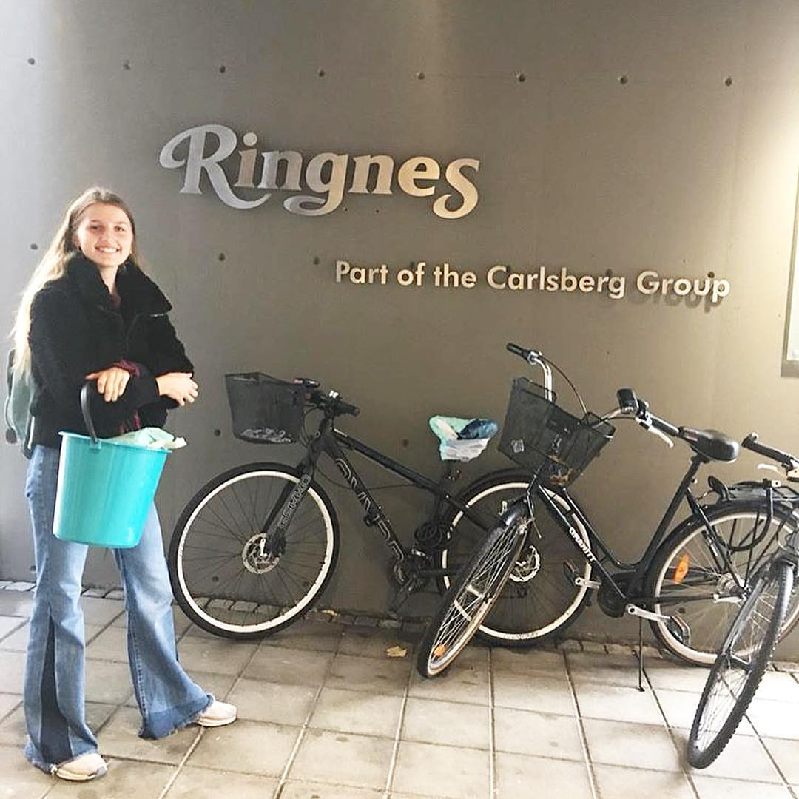

Vi har fått laget ferdig reklamefilmen og nettsiden. Nettsiden leser dere jo på ;) men reklamefilmen kan dere se på under.
Tanken bak reklamefilmen er at den skal være enkel og informativ. For å lage den har vi skrevet manus, tegnet alle figurene og brukt stopmotion til å animere. Til slutt har vi lagt til voiceover og redigert filmen slik at den varer i akkurat under et minutt.
Alt gikk bra på åpen dag. Vi møtte mange som var hyggelige og intresserte, og vi følte vi fikk forklart godt om elevbedriften. Det var flere som virket intressert i ideen og produktet.
Vi øvde litt på pitchen og på hva vi skulle si når folk kom til standen vår på Åpen Dag. Så gjorde vi alt klart, vi satt opp standen, hang opp plakater, satt opp brosyrene, mask og kaffegrut.
Vi lagde ferdig alle brosjyrene og brettet dem. Vi har alle øvd på pitchen og ble ferdig med animasjonen.
På slutten av dagen holdt vi presentasjon og det gikk veldig bra, vi fikk positiv tilbakemelding. Vi skulle også på Sagene bryggeri men vi ombestemte oss ettersom at vi fikk nok mask dagen før.
I dag startet vi dagen med å bli ferdig med pitchen og lage powerpointen til den. I gruppen bestemte vi navn og slagord. Vi ble også ferdig med plakaten til standen. Vi ringte også litt videre for å gjøre litt mer research, blant annet om nitrogen og hvordan man tilsetter det til jordblandingen. Vi dro også til Ringnes Bryggeri for å plukke opp mask. Vi begynte også på en animasjon. I tillegg til at vi fant ut at vi skulle bruke mark kompost.
 I dag ringte vi rundt til mange ulike fagfolk. Først ringte vi til en som vi fikk vi mye god info fra, og han henviste oss videre til en som holder på med kompost og torv-fri jord erstatninger. Hun sa vi kunne ringe noen fra Ås, da ble vi satt over til en jordekspert.
Videre ringte vi til Ringnes brygghus og fikk til en avtale om å hente hos dem. I tillegg til det ble vi ferdig med logoen (til siden), begynte på plakaten til åpen dag og å skrive pitch.
Da vi startet med elevbedrift hadde vi en ide om å lage engangsprodukter, som vanligvis er av plast, av andre materialer som papp og bambus etc. Etter litt drøfting i gruppen kom vi frem til at vi hadde lyst til å jobbe med å lage en torv fri jord fordi mammaen til en i gruppen var opptatt av det og vi tenkte det ville bli spennende å jobbe med. Hele dagen jobbet gjorde vi masse research om torv og leste om hvordan utgravning av torv påvirker miljøet. Vi begynte også på logoen vår.